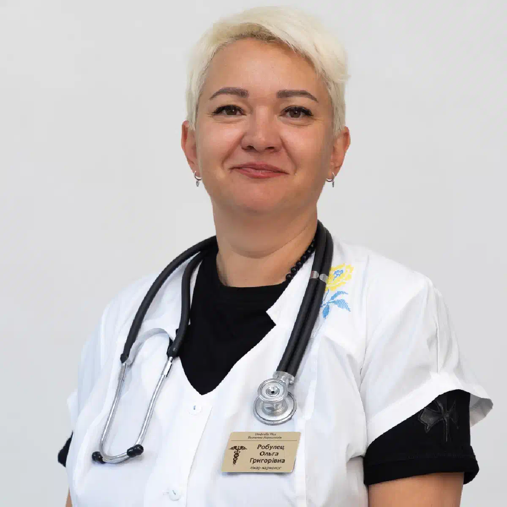

+38(068) 79 72 782
+38(068) 79 72 782Лікування залежності від Альфа-PVP у Харкові
Комплексно, конфіденційно, поетапно


Безкоштовна консультація, працюємо цілодобово 24/7
Комплексно, конфіденційно, поетапно

Дата написання: 19 вер. 2026 р.
Останнє оновлення: 27 вер. 2026 р.
Альфа-PVP (α-PVP) належить до синтетичних катинонів і має виражену психостимулювальну дію. Речовина впливає переважно на дофамінову та норадреналінову системи, що пов’язано як зі стимулювальними ефектами, так і з високим потенціалом зловживання. При вживанні можуть виникати сильне збудження, прискорене серцебиття, підвищення артеріального тиску, тривога, безсоння, параноїдальні ідеї та галюцинації. При регулярному вживанні можливе формування залежності. Лікування залежності від Альфа-PVP у Харкові має бути спрямоване не лише на усунення наслідків чергового вживання. Важливими етапами є оцінка фізичного та психічного стану, детоксикація від наркотиків за наявності медичних показань, робота з потягом, психотерапія та профілактика повторного вживання.
Альфа-PVP діє на системи мозку, пов’язані з мотивацією та винагородою. Речовина є потужним інгібітором транспортера дофаміну, а також впливає на норадреналінову систему. Такі властивості пояснюють виражену стимулювальну дію та потенціал формування повторного вживання. Після вживання людина може відчувати приплив енергії, підвищення активності та суб’єктивне відчуття впевненості. Однак позитивні відчуття можуть змінюватися тривогою, дратівливістю, безсонням, емоційним виснаженням і бажанням повторити вживання. Поступово поведінка людини дедалі більше починає будуватися навколо пошуку та вживання речовини. Епізоди вживання можуть ставати тривалішими, а періоди тверезості — скорочуватися. Особливо важливою ознакою стає втрата контролю: людина збирається припинити вживання, але знову повертається до речовини. На цьому етапі самостійних спроб часто виявляється недостатньо і може знадобитися професійне лікування наркотичної залежності.
Залежність не визначається одним окремим симптомом. Важливо оцінювати зміни поведінки, контролю над вживанням і впливу наркотику на повсякденне життя. Людина може відчувати сильний потяг до Альфа-PVP, постійно повертатися до вживання після спроб відмовитися, збільшувати тривалість епізодів вживання і дедалі більше часу присвячувати пошуку речовини або відновленню після неї. Поступово можуть виникати проблеми у стосунках із родичами, зниження працездатності, фінансові труднощі, відсутність інтересу до колишніх занять і порушення режиму сну. Характерною ознакою є продовження вживання навіть після появи очевидних медичних, психологічних і соціальних наслідків. За таких змін рекомендується консультація нарколога, що дає змогу оцінити ступінь проблеми та підібрати подальшу тактику допомоги.
Однією з найбільш показових ознак є нездатність дотримуватися власних обмежень. Наприклад, людина планує вжити речовину один раз, однак продовжує вживання значно довше. Спроби зробити перерву закінчуються поверненням до Альфа-PVP, а думки про наступне вживання починають займати дедалі більше часу. Можуть з’являтися заперечення проблеми та спроби пояснити вживання стресом, втомою, необхідністю «розслабитися» або певним оточенням. При цьому наркотик поступово починає витісняти інші джерела задоволення та мотивації. Робота, навчання, стосунки та звичні інтереси стають менш значущими. Якщо людина неодноразово намагалася припинити вживання, але знову до нього повертається, може знадобитися комплексна допомога при наркотичній залежності.
Після припинення тривалого або інтенсивного вживання можливий період вираженого фізичного та емоційного виснаження. Людина може відчувати слабкість, підвищену втомлюваність, порушення сну, тривожність, дратівливість, зниження концентрації уваги та пригнічений настрій. Для хронічного вживання синтетичних катинонів також описані порушення настрою та параноїдальні переживання; для цієї групи речовин загалом повідомляється про розвиток толерантності, залежності та симптомів відміни. Окремою проблемою є потяг до повторного вживання. Він може посилюватися на тлі стресу, недосипання, контакту зі звичним оточенням або вживання інших психоактивних речовин. Якщо після припинення Альфа-PVP з’являються виражена депресія, суїцидальні думки, психоз, агресивна поведінка або сильне збудження, необхідно звернутися за професійною допомогою.
Комплексне лікування наркоманії в Харкові будується з урахуванням фізичного стану пацієнта, тривалості вживання, психічних симптомів, попередніх спроб припинити вживання та наявності інших психоактивних речовин. Початковим завданням є визначення стану пацієнта. Якщо людина нещодавно вживала Альфа-PVP і присутні ознаки інтоксикації, насамперед необхідно стабілізувати стан. Після завершення гострого періоду основна увага переноситься на залежність: потяг, причини повторного вживання, психологічні тригери та профілактику зриву. Лікування може включати медичне спостереження, психотерапію, роботу з мотивацією та подальшу реабілітацію. Однієї процедури або крапельниці зазвичай недостатньо для лікування сформованої залежності, оскільки усунення наслідків інтоксикації не усуває психологічний потяг і звичні моделі поведінки.
Перший етап — оцінка поточного стану пацієнта. Лікар уточнює тривалість і частоту вживання, час останньої дози, наявність алкоголю або інших наркотичних речовин, хронічних захворювань і лікарських препаратів, які приймаються. Необхідно оцінити артеріальний тиск, частоту пульсу, рівень свідомості, вираженість збудження, сон, емоційний стан і наявність психотичної симптоматики. Якщо стан стабільний, наступним етапом стає визначення відповідного формату лікування. Це може бути амбулаторне лікування наркоманії, більш інтенсивне спостереження або стаціонарна програма. За наявності гострої інтоксикації першочерговим завданням стає її безпечне лікування.
Після тривалого вживання людина може перебувати у стані вираженого фізичного виснаження. Можливі нестача сну, зневоднення, тривога, прискорене серцебиття, підвищення тиску та інші порушення. Детоксикація після наркотиків проводиться за медичними показаннями після оцінки стану пацієнта. Важливо розуміти, що універсальної «крапельниці від Альфа-PVP», яка виводить наркотик з організму та миттєво усуває всі наслідки вживання, не існує. При інтоксикаціях синтетичними катинонами лікування переважно має підтримувальний та симптоматичний характер; специфічного антидоту для цієї групи речовин немає. Тактика залежить від конкретних симптомів та ускладнень. В окремих випадках медична допомога може включати корекцію зневоднення та інших порушень під наглядом фахівця. Крапельниця від наркотиків має проводитися лише тоді, коли для неї існують медичні показання.
Деякі етапи медичної допомоги можуть проводитися вдома, якщо пацієнт перебуває у відносно стабільному стані та лікар не виявляє ознак тяжкої інтоксикації. Наркологічна допомога вдома може включати первинну оцінку стану та вирішення питання щодо подальшої тактики. Однак лікування сформованої залежності не повинно обмежуватися домашньою крапельницею. Навіть після покращення фізичного стану зберігаються потяг, психологічні причини вживання та високий ризик повторного епізоду. Крім того, домашнє лікування підходить не всім. Виражений психоз, серйозне психомоторне збудження, судоми, порушення свідомості, висока температура, біль у грудях і значні порушення серцевого ритму потребують інтенсивнішої медичної допомоги. Для синтетичних катинонів описані тяжкі психічні, серцево-судинні та неврологічні ускладнення.
Наркологічний стаціонар необхідний у випадках, коли безпечно спостерігати за пацієнтом вдома неможливо. Госпіталізація може знадобитися при вираженому збудженні, галюцинаціях, параноїдальній поведінці, порушенні свідомості, судомах, гіпертермії, серйозних порушеннях серцевого ритму або інших тяжких ускладненнях. Також стаціонарний формат може розглядатися при багаторазових невдалих спробах припинити вживання, частих зривів або неможливості обмежити доступ до наркотичної речовини. Стаціонарне лікування наркоманії дає змогу спостерігати за станом людини, виключити доступ до речовини на початковому етапі та розпочати роботу із залежністю в контрольованих умовах.
Після вживання або припинення Альфа-PVP можуть зберігатися тривожність, дратівливість, внутрішнє напруження та порушення сну. Вираженість симптомів залежить від тривалості вживання, кількості речовини, сну, індивідуального стану та поєднання Альфа-PVP з іншими речовинами. Не слід самостійно комбінувати седативні, снодійні або інші сильнодіючі препарати з невідомою кількістю наркотичної речовини в організмі. Якщо тривожність зберігається після завершення гострого періоду, необхідно оцінити не лише фізичний, а й психічний стан пацієнта. Надалі може бути показана психотерапія при наркотичній залежності, спрямована на роботу з тривогою, емоційною регуляцією та причинами повторного вживання.
Гострий психотичний стан є одним із найнебезпечніших ускладнень вживання потужних синтетичних стимуляторів. У людини можуть виникати галюцинації, виражена підозрілість, відчуття переслідування, сплутаність свідомості, дезорганізована поведінка або сильне психомоторне збудження. Для α-PVP описані галюцинації, делірій і тяжке збудження, а для синтетичних катинонів загалом — психоз і параноїдальні прояви. У подібній ситуації необхідна термінова наркологічна допомога або екстрена медична допомога залежно від вираженості симптомів. Не слід самостійно намагатися утримувати агресивну або вкрай збуджену людину, якщо це створює загрозу для оточення.
Після періоду вираженої стимуляції може виникати емоційний спад. Людина може відчувати сильну втому, відсутність мотивації, апатію та зниження інтересу до звичної діяльності. У деяких пацієнтів емоційні порушення зберігаються довше та потребують окремої оцінки. Важливо відрізняти тимчасове виснаження після вживання від вираженого депресивного стану. Особливо серйозно слід ставитися до висловлювань про безглуздість життя, бажання заподіяти собі шкоду або суїцидальних намірів. Для α-PVP описувалися тяжкі психічні ускладнення, включно із суїцидальними думками. Після стабілізації стану психологічна допомога при залежності допомагає працювати не лише з емоційним станом, а й із факторами, які провокують повернення до наркотичної речовини.
Психотерапія є важливим етапом комплексного лікування. Після припинення вживання фізичний стан може досить швидко покращитися, однак психологічний потяг і звичні моделі поведінки здатні зберігатися значно довше. Під час психотерапії людина вчиться розпізнавати ситуації, які провокують бажання вжити наркотик. Це можуть бути конфлікти, стрес, певна компанія, алкоголь, нудьга, самотність або інші емоційні стани. Психотерапія при наркоманії допомагає формувати нові способи впоратися з подібними ситуаціями без повернення до психоактивної речовини. Окрема увага приділяється профілактиці зриву та плану дій при появі сильного потягу.
При тривалій або тяжкій залежності після медичного етапу може знадобитися реабілітація наркозалежних. Вона спрямована не на «очищення організму», а на довгострокову зміну поведінки та відновлення життя без наркотичної речовини. Під час реабілітації пацієнт працює з причинами вживання, вчиться розпізнавати небезпечні ситуації та поступово формує новий режим життя. Може відновлюватися сон, фізична активність, професійна діяльність і стосунки з родичами. Особливо важливою є реабілітація для пацієнтів, які вже неодноразово припиняли вживання, але через деякий час поверталися до Альфа-PVP.
Відновлення відбувається поступово. Після припинення вживання організму та нервовій системі потрібен час для нормалізації. Перші етапи можуть супроводжуватися вираженою втомою, порушеннями сну, тривогою, зниженням настрою та труднощами з концентрацією уваги. Поступово необхідно відновлювати режим сну, харчування, фізичну активність і повсякденне соціальне навантаження. Однак хороше фізичне самопочуття ще не означає, що ризик повторного вживання зник. Тому після медичної стабілізації важливо продовжити лікування залежності від наркотиків і роботу з психологічними механізмами залежності.
Для багатьох пацієнтів важливою умовою звернення є конфіденційність. У приватних медичних закладах можуть застосовуватися конфіденційні формати звернення, однак конкретний порядок ведення медичної документації та умови надання допомоги необхідно уточнювати безпосередньо у вибраному закладі. Анонімне лікування наркоманії знижує психологічний бар’єр перед зверненням за допомогою, але не повинно означати скорочення необхідного обсягу діагностики. Лікарю необхідно чесно повідомити, які речовини вживалися, коли була остання доза та які лікарські препарати приймалися додатково.
Єдиного терміну лікування не існує. Якщо йдеться лише про гостру інтоксикацію, медична допомога може тривати відносно короткий період. Лікування сформованої залежності потребує значно більше часу. Тривалість залежить від стажу вживання, частоти епізодів, вираженості потягу, психічного стану та наявності інших залежностей. Початкова стабілізація є лише першим етапом. Потім можуть знадобитися психотерапія, амбулаторне спостереження та реабілітація при наркоманії. Чим довше людина вживала Альфа-PVP і чим частіше відбувалися повторні епізоди після спроб відмовитися, тим тривалішою може бути програма відновлення.
Родичі часто першими помічають зміни поведінки та наслідки вживання. Однак постійні звинувачення, погрози та конфлікти рідко допомагають людині прийняти рішення про лікування. Краще спокійно говорити про конкретні наслідки вживання та пропонувати професійну допомогу. При цьому родичам важливо встановлювати межі та не фінансувати вживання, не купувати наркотичні речовини і не допомагати приховувати наслідки залежної поведінки. Корисною може бути консультація для родичів залежного, під час якої фахівець пояснює, як розмовляти з людиною, як реагувати на відмову від лікування та які дії можуть ненавмисно підтримувати залежність.
Людина із залежністю не завжди визнає проблему. Вона може вважати, що здатна припинити вживання самостійно, незважаючи на попередні невдалі спроби. У такому випадку може використовуватися мотиваційна бесіда із залежним. Завдання фахівця полягає не в тиску чи залякуванні, а в тому, щоб допомогти людині самостійно побачити наслідки вживання та суперечність між залежністю і її життєвими цілями. Іноді першим кроком стає не тривале лікування, а згода на консультацію. Мотивація до лікування залежності може формуватися поступово та підтримуватися протягом усієї програми відновлення.
Тривале вживання може негативно впливати як на фізичний, так і на психічний стан людини. Можуть виникати хронічні порушення сну, тривожність, дратівливість, емоційна нестабільність і погіршення концентрації уваги. Окрему небезпеку становить вплив на серцево-судинну систему. При α-PVP описані тахікардія, підвищення артеріального тиску та інші прояви вираженої психостимулювальної дії. Для синтетичних катинонів також описані тяжке збудження, психоз, судоми, гіпертермія, рабдоміоліз і ниркові ускладнення. Вираженість ризиків суттєво відрізняється залежно від речовини, кількості та поєднання з іншими психоактивними засобами. На тлі тривалого вживання нерідко з’являються і соціальні наслідки: погіршення стосунків із родичами, фінансові проблеми, зниження працездатності та втрата звичних інтересів.
Одночасне вживання кількох психоактивних речовин робить клінічну картину менш передбачуваною. Людина може гірше оцінювати власний стан, повторювати дози та не помічати розвитку небезпечних симптомів. Поєднання Альфа-PVP з іншими стимуляторами здатне додатково збільшувати навантаження на серцево-судинну та нервову системи. При комбінаціях синтетичних катинонів з іншими психоактивними речовинами характер і вираженість інтоксикації можуть суттєво змінюватися; поєднане вживання часто ускладнює оцінку стану пацієнта. При зверненні за медичною допомогою необхідно повідомити лікарю про всі вжиті речовини, включно з алкоголем і лікарськими препаратами. Якщо стан людини погіршується, може знадобитися лікування гострої наркотичної інтоксикації в умовах медичного закладу.
Не кожне погіршення самопочуття після вживання можна безпечно лікувати вдома. Особливо небезпечними є судоми, втрата свідомості, виражена сплутаність свідомості, психоз, сильне збудження, висока температура, біль у грудях, серйозні порушення серцевого ритму та утруднене дихання. Подібні прояви описані при тяжкій токсичності синтетичних катинонів і потребують медичної оцінки. За таких симптомів необхідно звертатися за екстреною медичною допомогою. Не слід намагатися самостійно підібрати комбінацію лікарських препаратів, щоб «заспокоїти» людину або нейтралізувати дію наркотику. При відносно стабільному стані та відсутності ознак загрози життю може бути організований терміновий виклик нарколога, після чого фахівець визначить подальшу тактику.
Вартість лікування наркотичної залежності від Альфа-PVP у Харкові починається від 2499 грн.
Першим кроком може стати звернення на консультацію нарколога в Харкові. При зверненні бажано повідомити вік пацієнта, як довго вживається Альфа-PVP, коли була остання доза та чи присутні алкоголь або інші наркотичні речовини. Також необхідно описати поточний стан: чи перебуває людина у свідомості, чи є виражене збудження, галюцинації, безсоння, тахікардія, підвищення тиску або інші симптоми. Якщо стан відносно стабільний, лікар може визначити відповідний формат подальшої допомоги — амбулаторний, домашній або стаціонарний. При тяжкій інтоксикації, психозі, судомах, порушенні свідомості, дихання або серйозних серцево-судинних симптомах пріоритетом є екстрена медична допомога. Лікування залежності від Альфа-PVP у Харкові не повинно обмежуватися усуненням наслідків чергового вживання. Після стабілізації необхідно працювати з потягом, причинами вживання та ризиком повторного епізоду.
Телефон для консультації та виклику нарколога додому в Харкові: +38(050-021-69-57)

Статтю перевірено експертом
Богоденко Костянтин
Лікар-анестезіолог, ординатор
Можливо цікава стаття:
Як очиститися від наркотиків — дієві поради

Так, ми суворо дотримуємося повної конфіденційності на всіх етапах лікування. Інформація про пацієнта, діагноз та проходження терапії не передається третім особам. Звернення до нас не тягне за собою постановку на облік. Ви можете бути впевнені у безпеці та анонімності.
Програма лікування розробляється індивідуально після консультації з фахівцем. Враховуються вид залежності, її тривалість, фізичний та психологічний стан пацієнта. Такий підхід дозволяє підвищити ефективність терапії та знизити ризик зриву. Ми не використовуємо шаблонні рішення.
Так, ми супроводжуємо пацієнтів і після основного курсу лікування. Проводяться консультації, рекомендації щодо адаптації та профілактики рецидивів. За потреби можлива подальша психологічна підтримка. Це допомагає зберегти результат та повернутися до повноцінного життя.
Анонимно

Помогли при ломке
Анонимно
Хочу поблагодарить специалистов фирмы «Амбрела плюс» за реальную помощь в сложный период. Обратился в состоянии ломки, было тяжело и физически, и морально. Врачи отреагировали быстро, всё объяснили, поддерживали на каждом этапе. Состояние стабилизировали, стало значительно легче уже в первые часы. Спасибо за профессионализм и человеческое отношение.
Номер телефону:
+380 (68) 797 27 82
+380 (50) 021 69 57
Адресу наркологічного центра вашого міста уточнюйте за
телефоном
Працюємо: Київ, Одеса, Львів, Харків, Дніпро, Запоріжжя,
Черкасах, Чугуєві, Чорноморську, Кам'янському
Telegram: t.me/umbrellaplus
Графік работы: Цілодобово